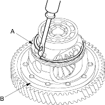
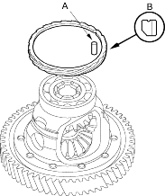
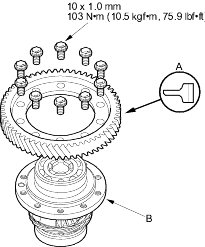
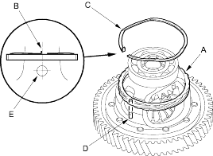

- Remove the snap ring (A) from the differential assembly (B).

- Remove the 5 x 10 mm roller (A) and the speedometer drive gear (B).

- Remove final driven gear bolts, then separate the final driven gear and the differential carrier. The final driven gear bolts have left-hand threads.
- Install the final driven gear (A) on the new differential carrier (B) with the chamfered side on the inner bore facing the differential carrier.

- Tighten the bolts to 103 Nm (10.5 kgf/m, 75.9 lbf/ft) in a criss-cross pattern.
- Install the speedometer drive gear (A) with its chamfered side facing the carrier. Align the cutout on the bore of the speedometer drive gear with the 5 x 10 mm roller hole, then install the 5 x 10 mm roller.

- Align the hooked end (B) of the snap ring (C) with the spring pin (D) in the pinion shaft (E), then install the snap ring in the differential carrier groove.